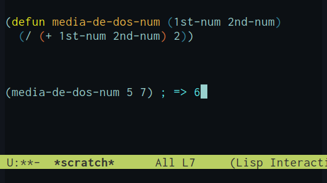

LISP in Small Parts
Table of Contents
- Para Empezar
- Listas
- Expresiones
- Definiendo Procedimientos
- Variables
- Trabajando con Listas
- Cadena de Caracteres
- Imprimir.
- Comprobando Resultados.
- Comprobando Objetos LISP:
eq - Comprobando Números:
, =>, y< - Hay Números Pares o Impares allí?:
evenp,oddp - Comprobando Igualdad Entre Cadenas de Caracteres:
string= - Es algo un número?:
numberp - Es Algo Una Lista?:
listp - Comprobando si
nil:null - Comprobando Condiciones:
if - Combinando Pruebas:
and,or,not - Agrupando Procedimientos:
progn - Ejercicios.
- Comprobando Objetos LISP:
- Creando Cuadros de Diálogo.
- Mostrar un Mensaje:
capi:display-message - Ingresar Cadena de Caracteres En Un Cuadro de Diálogo:
capi:prompt-for-string - Preguntando
siono:capi:prompt-for-confirmation - Dar al usuario la posibilidad de elegir:
capi:prompt-with-listycapi:prompt-for-items-from-list - Un programa Que Escribe Historias.
- Ejercicios.
- Mostrar un Mensaje:
- Escribiendo Programas.
Para Empezar
A diferencia de otros lenguajes de programación LISP es interactivo. Incluye una ventana llamada Listener que podemos usar como usamos la pantalla de una calculadora. Podemos tipear una expresión LISP ante el prompt ">", presionar 'enter' y el sistema evaluará la expresión y mostrará la respuesta.
Por ejemplo, para sumar dos números escribimos:
CL-USER > (+ 2 3)
5
Como probablemente hayas notado (+ 2 3) es la manera LISP de sumar dos números. En matemáticas habituales escribimos 2 + 3 pero en LISP escribimos el nombre del procedimiento primero, seguido por los argumentos y toda la expresión encerrada entre paréntesis. A esto llamaremos la notación LISP. Y aunque parezca extraño constituye uno de los grandes aportes de LISP.
Una ventaja de la notación LISP lo veréis en el siguiente ejemplo.
En matemáticas habituales, para sumar tres números tendríamos que escribir: 2 + 3 + 4
En LISP, en cambio, escribimos:
CL-USER > (+ 2 3 4)
9
Procedimientos Ariméticos -, +, * y /
Aquí algunos otros ejemplos de procedimientos básicos en LISP para trabajar con números
| Función | Descripción | Ejemplo |
|---|---|---|
| + | Suma | (+ 2 3 4) |
| - | Resta | (- 7 3) |
| * | Multiplicación | (* 2 3) |
Expresiones pueden ser encestadas. O, en otras palabras, expresiones pueden ser, a la vez, argumentos:
CL-USER > (/ (- 7 1) (- 4 2))
3
Otra belleza de aporte de la notación LISP es que nos permite expresar casi todo, desde simples cálculos hasta complicados programas.
Números al azar, Aleatoriedad.
Un procedimiento aleatorio devuelve un integral al azar entre 0 y un número menos que el integral del argumento, por ejemplo:
CL-USER > (random 10)
3
CL-USER > (random 10)
7
Ejercicios
- Escribir las LISP expresiones para las siguientes operaciones matemáticas y evaluarlas.
2 * 3 + 7 * 83 * 4 * 5-1 * 2 + 3
- Escribir una expresión que retorne el número que resulte de lanzar un dado.
Listas
Así como resulta fácil trabajar con números como 2 y 3, con LISP resulta también fácil trabajar con grupos diferentes de items que, llamaremos listas. Para especificar una lista de items la convención es agruparlos entre paréntesis. Por ejemplo, la lista de números cuadrados perfectos de dos dígitos es:
(16 25 36 49 64 81)
Una lista que no contiene items, que llamaremos lista vacía, la escribimos como sigue:
()
Es también llamada nil.
De hecho, usamos listas cuando pedimos a LISP evalúe :
(+ 2 3 4)
Esta es una lista de cuatro items: el símbolo + y los números 2, 3 y 4. Cuando LISP evalúa una lista, trata el primer item como el nombre del procedimiento, y el resto de items como los argumentos de la expresión.
Esto ilustra uno de los más remarcables atributos de LISP —LISP programas y LISP datos son ambos expresados de la misma forma, tal que listas.
Confeccionando listas: list
El procedimiento llamado list nos permite confeccionar listas según requiramos. Intentar por ej.
CL-USER > (list 1 2 3)
(1 2 3)
El procedimiento llamado list convierte los argumentos de una expresión en una lista y los agrupa entre paréntesis. Como en todos los procedimientos, los argumentos son evaluados primero, de forma que:
CL-USER> (list (* 1 2) (* 3 4))
(2 12)
Los items en una lista pueden ellos mismo ser a su vez listas. Probad por ejemplo con:
CL-USER> (list (list 1 2) (list 3 4))
((1 2) (3 4))
Esta es una lista de dos items, cada una de las cuales es, a su vez, una lista de dos items.
Ejercicios
Escribir la expresión LISP de la cual resulte la siguiente lista:
(1 (2 (3 4)))Luego ejecutar a fin de comprobar evaluar tu respuesta.
- Escribir una expresión que dé por resultado una lista de dos números al azar, cada uno de entre
0 y 9.
Expresiones
Veamos más de cerca las expresiones en LISP.
En LISP, '+' es un procedimiento y una expresión como (+ 2 3) es una llamada a procedimiento. cuando LISP evalúa un procedimiento lleva a cabo los siguientes dos pasos:
- Evalúa los argumentos, izquierda a derecha. En este caso los argumentos son justamente los números
2 y 3y éstos se evalúan contra sí mismos. - Los valores de los argumentos son pasados al procedimiento, en este caso "
+", lo que devuelve5.
Veamos un ejemplo algo más complicado: (/ (-7 1) (-4 2)) En este caso la secuencia es:
- Evalúa
(- 7 1)que da6 - Evalúa
(- 4 2)que da2 - Evalúa
(/ 6 2)que da3 - Devuelve
3
Previniendo evaluación: quote
Casi todos los operadores se comportan de la manera descrita pero existen ciertos operadores especiales que se comportan de diferente manera, uno de ellos es la comilla (quote). Probar por ej.
CL-USER> (quote (+ 2 3))
(+ 2 3)
El operador quote no evalúa argumentos, simplemente los devuelve tal cual. Y te permite decirle a LISP trate una expresión como datos en vez de algo para ser evaluado. Por convención podemos también abreviar (quote) usando directamente la comilla. Probar por ej.
CL-USER> '(+ 2 3)
(+ 2 3)
El operador " ' " permite proteger una expresión de ser evaluada. Ahora intentemos uno de los argumentos tal que en:
CL-USER> (list '(* 1 2) (* 3 4))
((* 1 2) 12))
La comilla detiene a LISP de evaluar el primer argumento.
Evaluando Expresiones: eval
Lo contrario de quote es eval; Que evalúa la expresión puesta como argumento, de modo que:
CL-USER> (eval '(+ 2 3))
5
Elementos que se evalúan contra sí mismos.
Un número se evalúa contra sí mismo, por tanto no es necesario aplicarle quote
CL-USER> 12
12
Del mismo modo nil, o la lista vacía, ambos evalún tal que nil.
CL-USER> ()
NIL
Ejercicios.
- Desarrollar manualmente las siguientes expresiones LISP luego comprobar las respuestas evaluándolas con el LispStick!
(list (list 2 3) (list 4 5))(list '(list 2 3) '(list 4 5))`(list (list 2 3) (list 4 5))
Definiendo Procedimientos
Hasta ahora hemos usado listener como calculadora para evaluar expresiones. En esta lección vamos a dar un gran salto adelante y mostrar cómo definir tus propios procedimientos. Una vez definido un procedimiento, éste tiene el mismo status que los aquellos incorporados por diseño como list o + vistos antes.
Definamos un procedimiento que nos devuelva (return) la media de dos números. En palabras, el procedimiento para hallar la media de dos números es:
- sumar el primer número al segundo.
- dividir la suma entre 2
Definiendo Un Procedimiento: defun
Para definir un procedimiento usamos el operador especial defun. Cuyo nombre resulta de abreviar "definir función", recordar aquí que procedimientos en LISP no son estrictamente funciones en el sentido q tiene ése capítulo de las matemáticas llamado funciones.
Podemos escribir el procedimiento para obtener la media de la siguiente manera:
(defun media-de-dos-num (1st-num 2nd-num) (/(+ 1st-num 2nd-num) 2))
El primer argumento de la función da el nombre a la función, en este caso hemos elegido media-de-dos-num.
El segundo argumento (1st-num 2nd-num) es una lista que llamamos parámetros de la función. Podemos usar también símbolos para representar esta particular lista pero nos referiremos a ello más adelante.
El segundo argumento (/(+ 1st-num 2nd-num)) constituye el cuerpo del procedimiento y le dice a LISP cómo calcular el valor que se busca, en este caso sumar los números dados y dividirlos entre 2.
Las palabras usadas en los parámetros son arbitrarias siempre cuando una vez usadas en la definición no sean luego alteradas. De modo que nuestro ejemplo podría bien haber sido escrito de la siguiente manera:
(defun media (a b) (/(+ a b) 2))
A fin de crear la función, entonces, tipeamos en la línea de comandos de LISP:
CL-USER > (defun media-de-dos-num (1st-num 2nd-num) (/ (+ 1st-num 2nd-num) 2))
A fin de comprobar el procedimiento que acabamos de crear, tipeamos:
CL-USER > (media-de-dos-num 5 7)
6
o
CL-USER > (media-de-dos-num (+ 2 3) (+ 4 5))
7
A manera de ejemplo ver la foto de pantalla del ejercicio justo anterior y tener una idea aunque trabajando en elisp en EMACS, nuestro editor de preferencia.

Recordar que los argumentos son evaluados antes en la ejecución del procedimiento.
Procedimientos Sin Parámetros.
Un procedimiento no tiene necesariamente que incluir parámetros. Veamos aquí un procedimiento que llamaremos dado y que nos devuelve el resultado de lanzamientos al azar entre 1 y 6.
(defun dados () (+ 1 (random 6)))
Para llamar al procedimiento simplemente tipeamos:
CL-USER > (dados)
5
Ejercicios.
- Define un procedimiento llamado cuadrado que devuelva el cuadrado de un número. comprueba debe resultar tal que:
(cuadrado 7)
resulte49 - Define un procedimiento llamado triangular que devuelva el n triangular de un número, definiendo esto según la siguiente expresión
n(n+1)/2y comprueba resulta tal que en el siguiente ejemplo:
(triangular 10)
resulta55 - Define un procedimiento llamado dos-dados que devuelva el resultado total de lanzar al azar dos dados.
Variables
Consideremos cómo escribiríamos una función para convertir dólares a libras esterlinas. El procedimiento podría ser como sigue:
- Multiplicar la cantidad de dólares por el tipo de cambio. El tipo de cambio es el valor en libras de cada dólar; digamos que el valor vigente hoy sea 0.61. La definición de nuestro procedimiento es, por tanto, simple.
(defun convierte (dolares) (* dolares 0.61))
Y, llamamos a la función de la siguiente manera:
CL-USER> (convierte 100)
61.0
En la definición que llamamos convierte, el símbolo dólar es una variable. Es tal que una caja en la que colocamos cualquier valor que quisiéramos convertir a libras.
Algo más, la llamamos variable local porque el valor está sólo disponible dentro del cuerpo de ésta función.
Definiendo Variables: defparameter
Un problema que surge con convierte es que tenemos que redefinirla cada vez que el tipo de cambio cambia. Lo que necesitamos es una variable que podamos vincular a un tipo de cambio, digamos, vigente y se actualice automáticamente. Podemos hacer eso con defparameter.
(defparameter tipo-de-cambio 0.61)
Variables definidas con defparameter son llamadas *variables globales* porque podemos hacer uso de ellas desde cualquier parte.
CL-USER> tipo-de-cambio
0.61
Hecho esto podemos redefinir convertir a fin de usar la variable tipo-de-cambio
(defun convertir (dolares) (* dolares tipo-de-cambio)
Una convención bastante extendida es poner el nombre de las variables globales entre asteriscos, tal que *tipo-de-cambio* a modo de recordatorio y sepamos rápidamente que se trata de una variable global.
Cambiar el Valor de una Variable: setf
Para cambiar el valor de una variable podemos usar setf. Por ejemplo, si el tipo de cambio cambia a 0.7:
(setf tipo-de-cambio 0.7)
De modo que si llamamos al procedimiento convierte, el resultado reflejará automáticamente el nuevo tipo de cambio.
CL-USER> (convertir 100) 70.0
Creando Variables Locales: let*
La construcción let* nos permite definir una o más variables, con valores iniciales que podemos determinar según requerimiento del programa, y, locales al procedimiento que las crea. Se escribe de la siguiente manera:
(let* ((var1 value1) (var2 value2) …) cuerpo de procedimiento)
Donde:
- var1 es la primera variable local y value1 su valor inicial
- var2 es la segunda variable local y value2 su valor inicial y así sucesivamente.
- cuerpo es uno o más procedimientos que componen el programa y que harán requerimiento de var1 y var2 en algún punto del proceso.
A manera de ejemplo, recordemos la definición de media de números.
(defun media-de-dos-num (1st-num 2nd-num) (/ (+ 1st-num 2nd-num) 2))
Los parámetros 1st-num y 2nd-num son variables locales, locales al cuerpo del procedimiento media-de-dos-num.
Pero supongamos que queremos separar el cálculo en secciones. Podemos hacerlo usando una variable local que llamamos por ejemplo suma que almacene el valor de la suma de los dos números y otra resultado que guardará el de dividir esto entre dos. Y lo hacemos con let*:
(defun media-de-dos-num (1st-num 2nd-num) (let* ((suma (+ 1st-num 2nd-num)) (resultado (/ suma 2))) resultado))
Note que el asterisco en let* es parte del nombre — let* es una versión más general de un operador llamado let, pero no nos preocuparemos acerca de esto en este punto.
Ejercicios
- Definir una variable usando defparameter para representar que
1 kilómetro = 0.621371192millas Use esta variable para definir dos procedimientos,convertir-kmyconvertir-millas, que conviertan millas a kilómetros y kilómetros a millas. Y compruebe que80km resultan en aproximadamente50millas. - Definir un procedimiento
media-de-tres-numy compruebe que la(media de 21 7 8)nos devuelve12 - Aquí un procedimiento llamado
sumacubosque calcula(a+b)x(a+b)x(a+b):
(defun sumacubos (a b)
(* (+ a b) (+ a b) (+ a b)))
Use let* para escribir un procedimiento en el que (a+b) solo se calcule una vez. Luego compruebe si:
CL-USER> (sumacubos 3 4)
resulta 343
Trabajando con Listas
Ya hemos visto el procedimiento llamado list que construye listas a partir de diferentes items. En este capítulo veremos algunos otros procedimientos para trabajar con listas.
Obtener El Primer Elemento de una Lista: first
Aquí como funciona first
CL-USER> (first '(23 34 45))
23
Existen similares procedimientos second, third y así sucesivamente hasta tenth a fin de obtener los posteriores items en una lista.
Obteniendo Todos Menos el Primer Elemento de Una Lista: rest
EL procedimiento rest toma una lista y la devuelve exceptuando el primer elemento.
CL-USER> (rest '(23 34 45))
(34 45)
Note que first y rest fueron tradicionalmente llamados car y cdr; puede encontrar referencias a este capítulo alternativamente con estos nombres en LISP.
Obteniendo el Eneavo Elemento de una Lista: nth
EL procedimiento nth toma un número y una list y devuelve el eneavo elemento de la lista, contando el primero como cero:
CL-USER> (nth 1 '(23 34 45))
34
Note que LISP usualmente cuenta las lista de items empezando de cero; aunque los procedimientos first y second son excepciones.
(nth 0 lst) es equivalente a (first lst)
y (nth 1 lst) es equivalente a (second lst)
Obteniendo el Largo de Una Lista: length
El procedimiento length devuelve el largo de una lista; por ejemplo:
CL-USER> (length '(1 2 3))
3
Construyendo listas: cons
El procedimiento cons toma dos parámetros -un objeto, el que aportas, y una lista- y retorna una nueva lista con el objeto aportado añadido delante en la lista. Por ejemplo.
CL-USER> (cons 1 '(2 3 4 5 6))
(1 2 3 4 5 6)
Note que el primer objeto puede, él mismo ser también una lista:
CL-USER> (cons '(0 1) '(2 3 4 5 6))
((0 1) 2 3 4 5 6)
Unificando Listas: append
El procedimiento append coge un número cualquiera de listas y compone juntándolas una nueva lista. Por ejemplo:
CL-USER> (append '(1 3 5 7) '(2 4 6 8))
(1 3 5 7 2 4 6 8)
Combinando Procedimientos con Listas
Usando estos procedimientos podemos a su vez definir nuevos procedimientos que combinen casi cualquier operación con listas según requiramos. Por ejemplo, definamos un procedimiento que inserte un item entre el primero y segundo item en una lista, de forma que:
CL-USER> (instert 2 '(1 3 4 5 6))
debe dar:
(1 2 3 4 5 6)
Podemos hacerlo de la siguiente forma:
(defun insert (item lst) (cons (first lst) (cons item (rest lst))))
Ejercicios
- Escriba un procedimiento
swappara intercambiar los primeros dos elementos de una lista y se cumpla que:
(swap '(9 8 7 6))devuelva:(8 9 7 6) - Escriba un procedimiento
duppara duplicar el primer elemento en una lista, de forma que:
(dup '(0 1 2 3))devuelva(0 0 1 2 3) - Escriba un procedimiento
random-eltque devuelva un elemento al azar de una lista dada. Por ejemplo:
(random-elt '(11 22 33 44))debería devolver uno de los números de la lista. (!) Usenthyrandom. - Escriba un procedimiento
last-eltque devuelva el último item de una lista dada. De forma que, por ejemplo:
(last-elt '(1 2 3 4))devuelva4
Cadena de Caracteres
Hasta ahora hemos tratado los siguientes tipos de objetos LISP:
- Números, tal que
2,4, o17 - Nombre de Procedimientos, tal que
+olist - Listas, tal que
(1 2 3 4)o(+ 3 6)
También hemos aprendido que LISP usa listas tanto como datos o programas. La lista (1 2 3 4) son datos, porque 1 no es el nombre de ningún procedimiento. La segunda lista (+ 3 6), llama a un procedimiento que suma 3 y 6 (puede ser también datos que resulta que ejecuta un procedimiento)
Cadenas de Caracteres
El nuevo tipo de objeto es una string: una secuencia de caracteres de cualquier tipo encerradas entre doble comillas. Aquí, por ejemplo mostramos cuatro strings
- "gato"
- "perro"
- "En un tiempo remoto, hubo una vez un príncipe"
- ""
El último de ellos es una cadena vacía, no contiene caracteres. Aún así es válida y de hecho, útil. Puedes también incluir la propia doble comilla dentro de la cadena pero avisándole a LISP mediante una contra-barra inmediatamente antes de la tipear la comilla.
- "El tipo gritó \"Ayuda!\" y desapareció corriendo."
Ahora veamos algunos procedimientos que trabajan con strings (note que muchos de ellos trabajan también con listas list.
Reverso de String: reverse
CL-USER> (reverse "dog")
"god"
Unir Dos (o más) Cadenas de Caracteres: concatenate
Inmediatamente después del nombre función 'string el siguiente argumento debe ser una cadena y le dice a LISP que clase de cosa se quiere concatenar.
CL-USER >(concatenate 'string "band" "era")
"bandera"
El procedimiento concatenate puede tomar un arbitrario número de cadenas, todas las cuales pasarán a formar una sola cadena.
Extraer Una Secuencia De Una Cadena: subseq
Hacer esto toma tres parámetros: la cadena, el primer caracter (empezando por 0) y el caracter posterior.
CL-USER > (subseq "unapalabrasupercalifragi" 10 15) "super"
Si no se aportara el tercer parámetro LISP devuelve el resto de la cadena empezando en la posición del parámetro aportado.
Escribiendo Procedimientos Usando Cadenas.
Ahora estamos listos para escribir procedimientos usando cadenas. Escribiremos un simple programa que genere piglatin un juego con el idioma similar a las jerigonzas de pe. Consiste en quitar la primera letra de una palabra, moverla al final y agregar "ay".
(defun piglatin (palabra) (concatenate 'string (subseq palabra 1) (subseq palabra 0 1) "ay"))
Probando, tenemos:
CL-USER> (piglatin "cerdo") "erdocay"
Si conoce el sistema, piglatin es una forma de jerigonza del idioma Inglés, notará que el programa no funciona del todo perfectamente. Pruebe sino el procedimiento en este caso:
(piglatin "ant")
Más adelante cuando estudiemos el procedimiento llamado if seremos capaces de escribir una función piglatin que funcione perfectamente.
Ejercicios.
- Escribir un procedimiento que llamaremos
midversea fin de poner al revés todo excepto la primera y la última letra en una palabra. Por ejemplo(midverse "madagascar") cambie a "macsagadar".Compruebe, además que(midverse (midverse "palabra"))deja la palabra intacta.
Imprimir.
Cuando se evalúa un procedimiento LISP en el "listener" este retorna un valor. Pero cuando un programa se está ejecutando es fácil requerir se impriman o se aporten al procedimiento ciertos valores necesarios antes que el programa retorne un resultado final. LISP provee varias funciones específicamente para este fin.
Imprimiendo un Resultado: print
La más simple de estas funciones es print. Simplemente imprime en pantalla el argumento y el valor del argumento. Si se por. ej. se evalúa:
CL-USER> (print 123)
123
123
El primer 123 es el efecto de imprimir el procedimiento. El segundo 123 es el valor que retorna el procedimiento, que en este caso resulta ser también 123. El siguiente ejemplo aclarará este asunto algo más claro.
(defun print-and-double (n) (print n) (* n 2))
Si lo evaluamos tenemos:
CL-USER > (print-and-double (12))
12
24
Imprimiendo Valores de Acuerdo a Formato: format
La navaja suiza de imprimir es format. Incluye opciones para imprimir cualquier clase de valores y acaso en todas las maneras concebibles, y, me atrevería a decir que la mayoría de los programadores en LISP usan sólo un pequeño grupo de sus funcionalidades. Solo mencionaré aquí sus prestaciones más útiles.
El procedimiento format toma dos o más parámetros.
El primer parámetro puede ser o t, que activa, digamos, la función y le dice a format que el resultado se imprimirá de acuerdo a formato, o nil, que devuelve el resultado tal cual, como una string, o cadena de caracteres.
El segundo parámetro es una cadena de formato y le dice a format como imprimir el resultado. Es una cadena de texto que a su vez puede incluir secuencias especiales, todas ellas marcadas con el prefijo "~" "tilde".
El resto de parámetros son evaluados a fin de obtener los valores que irán a ser insertados en el formato de la respuesta. La forma más general es como sigue: "~a" que inserta el valor tal cual sería impreso por print, por ejemplo:
(format t "La respuesta es ~a. " (* 2 3))
inserta el valor de (* 2 3) a continuación de la secuencia marcada con ~a de modo que imprime:
La respuesta es 6.
Puede incluirse también ~% en el formato a fin de obtener un salto de línea.
Alternativamente, como ya mencionado, marcando el parámetro con la opción nil podemos usar format para generar una string de forma que:
(format nil "La respuesta es ~a. " (* 2 3))
devolverá:
"La respuesta es 6"
Veremos más ejemplos usando format cuando lleguemos al Proyecto "Animales"
Ejercicios.
Use
formatpara escribir un programa que escriba una historia. El procedimiento que llamaremos "story" deberá incluir un nombre, un nombre de comida y un color. Por ejemplo:
(story "Lisa" "queso" "verde")
Y produzca una historia como la que sigue:
Hubo una vez una princesa llamada Lisa a la que le gustaba el queso. Un día Lisa, encontró queso tipo verde y comió tanto que murió. FIN.
Comprobando Resultados.
Una herramienta importante cuando se trata de escribir programas es poder ejecutar diferentes acciones dependiendo del resultado del cálculo.
Primero necesitamos presentar algunas funciones que tienen por objeto comprobar el valor de una expresión. LISP incluye cierto número de funciones que retornan respuestas del tipo verdadero falso -Son las llamadas predicados, y, frecuentemente (aunque no siempre) tienen nombres que acaban en p.
En LISP la convención es que nil, o la lista vacía, significa falso, y todo lo demás verdadero. Si se quiere representar true / verdadero se usa el operador especial LISP, t.
Comprobando Objetos LISP: eq
El más importante LISP test es "eq"; y comprueba si dos objetos LISP son idénticos. Por ejemplo:
CL-USER > (eq 'fred 'fred)
T
CL-USER > (eq 'fred 'jim)
NIL
Comprobando Números: , =>, y <
Existen varias funciones para comprobar valores numéricos. Por ejemplo = comprueba si dos o más números son iguales.
CL-USER> (= 2 2)
T
Del mismo modo, ">" comprueba si el primer número es mayor que el segundo:
CL-USER> (> 4 3)
T
Recordad que en notación LISP la función se indica primero. En matemáticas habituales la notación correcta sería 4 > 3.
CL-USER> (> 3 3)
NIL
El test "eq" puede también ser usado con números pero es más intuitivo usar "=".
Hay Números Pares o Impares allí?: evenp, oddp
Se puede comprobar si un número es par o impar con evenp y oddp. Por ejemplo:
CL-USER> (evenp 17)
NIL
CL-USER> (oddp 17)
T
Comprobando Igualdad Entre Cadenas de Caracteres: string=
No requiere demasiada explicación.
CL-USER> (string=
"gato" "gato")
T
CL-USER> (string= "gato" "perro")
NIL
Es algo un número?: numberp
Se puede comprobar si un elemento es un número con numberp de la siguiente manera:
CL-USER> (numberp 2)
T
CL-USER> (numberp '(1 2 3)
NIL
Es Algo Una Lista?: listp
Se puede comprobar si algo es una lista con listp. Por ejemplo:
CL-USER> (listp '(1 2 3)
T
CL-USER> (listp 1)
NIL
Note que dado que nil es equivalente a una lista vacía, una lista vacía es estrictamente una lista:
CL-USER> (listp nil)
T
Pero note que:
CL-USER> (listp (+ 1 2)
NIL
Porque (+ 1 2) es 3, un número no una lista. Por tanto:
CL-USER> (numberp (+ 1 2)
T
Comprobando si nil: null
La función predicado null retorna t si el parámetro es nil, sino, retorna nil. Recordad que nil se evalúa a sí mismo, de modo que:
CL-USER> (null nil)
T
Comprobando Condiciones: if
Ahora estamos listos para ejecutar acciones alternativas dependiendo del valor que nos provea una expresión. LISP incluye diferentes formas de hacer esto pero la más simple es if.
La forma if toma tres parámetros. Evalúa el primero de ellos, si la evaluación retorna un valor non-nil, evalúa y retorna el segundo parámetro; sino evalúa y retorna el tercer parámetro. Aquí un ejemplo:
(if (evenp a)
(print "La respuesta es par")
(print "La respuesta es impar"))
Esto imprimirá una de las dos cadenas de caracteres dependiendo de si a es par o impar.
Aquí una aplicación de if que usaremos para encontrar el máximo de dos números.
(defun maximun (a b) (if (> a b) a b))
Combinando Pruebas: and, or, not
Podemos también combinar diferentes test usando los procedimientos and, or, y not, cuyo significado es obvio como veremos en el ejemplo. Un procedimiento que compruebe si alguien es un adolescente podría ser el siguiente:
(defun adolescente (edad)
(if (and (> edad 12) (< edad 20))
"adolescente"
"no adolescente"))
Agrupando Procedimientos: progn
La forma if solo permite incluir un parámetro a ser ejecutado si el resultado es verdadero y uno si el resultado es falso. Qué pasa si uno quisiere ejecutar dos según resulte una situación o ambas?
La forma progn es útil en este caso. Permite agrupar varios procedimientos dentro de una lista entre paréntesis.
(if (evenp a)
(progn (print "La respuesta es par") 0)
(progn (print "La respuesta es impar") 1))
Ejercicios.
- Escriba un procedimiento que llamaremos
palindrome?a fin de comprobar si una cadena de caracteres es palindrome. (!) Usereverse. Y compruebe si:
(palindrome? "madam")
retorna T
- Calcule mentalmente cuál será el resultado de las siguientes expresiones LISP y compruebe sus respuestas evaluándolas.
(if (listp '(1 2 3)) 3 4)
(if (numberp '(1 2 3)) '(1 2 3) '(4 5 6))
(if (> 0 -1) (+ -1 3) (+ -1 4))
- Mejore el programa
piglatinde la secciónCadena de Caracteres/stringsa fin de que funcione con palabras que empiecen con vocal. Por ejemplo:
"cerdo" resulta "erdocay"
pero "araña" debe resultar "arañaway"
Creando Cuadros de Diálogo.
En esta lección vamos a aprender cómo usar LISP para crear interfaces Macintosh como ventanas y cuadros de diálogo.
El procedimiento para hacer esto está incluído en la LISPWORKS librería llamada CAPI y sus nombres empiezan con capi:.
Mostrar un Mensaje: capi:display-message
Para presentar mensajes en pantalla usamos el procedimiento capi:display-message. Seguido por una cadena de caracteres formateada tal como queremos que sea presentada en pantalla y la lista de argumentos que requiere para ejecutarse, tal como indicamos en format. Por ejemplo:
(capi:display-message "La suma de ~a y ~a resulta ~a." 3 4 (+ 3 4))
mostrará en pantalla:

Ingresar Cadena de Caracteres En Un Cuadro de Diálogo: capi:prompt-for-string
Este comando pide presenta un cuadro de diálogo que ingresa información. Por ejemplo:
(capi:prompt-for-string "Think of an animal:")
Mostrará:

Y retornará la cadena de caracteres que hayas escrito.
Preguntando si o no: capi:prompt-for-confirmation
El procedimiento capi:prompt-for-confirmation permite trabajar con programas que dependen de respuesta del tipo si o no para ejecutar una rutina.
(capi:capi:prompt-for-confirmation "Are you hungry?")
Tienes hambre? y muestra en pantalla:

Si el usuario responde si el procedimiento retorna T (t/verdadero). Si el usuario responde No, retorna nil (false)
Dar al usuario la posibilidad de elegir: capi:prompt-with-list y capi:prompt-for-items-from-list
Finalmente, la función capi:prompt-with-list toma una lista y un mensaje y permite al usuario seleccionar uno de los items, por ejemplo.
(capi:prompt-with-list '("red" "blue" "green" "pink") "What's your favourite colour?")
Lo que mostrará en pantalla:

Y retornará el valor del item seleccionado.
El procedimiento capi:prompt-for-items-from-list es idéntico, con la diferencia que le permite al usuario seleccionar cualquier número de items, y retorna una lista con los items seleccionados.
Un programa Que Escribe Historias.
Finalmente, tenemos que mezclando convenientemente procedimientos descritos podemos crear un programa capaz de escribir historias:
(defun story () (let ((name (capi:prompt-for-string "What is your name:")) (food (capi:prompt-for-string "What's your favourite food:")) (colour (capi:prompt-with-list '("red" "blue" "green" "pink") "What's your favourite colour?"))) (capi:display-message "There once was a witch called ~a who liked ~a. One day ~a found some ~a ~a and ate so much that she died. The end." name food name colour food)))
A fin de ejecutar el programa evaluamos:
(story)
Porque el programa no incluye parámetros.
Ejercicios.
- Intentar mejorar el programa a fin de escribir una historia más larga y use
capi:prompt-for-confirmationeifa fin de ampliar la historia, por ejemplo:
(capi:prompt-for-confirmation "Should the witch die at the end?)
Escribiendo Programas.
Hasta aquí hemos aprendido cómo escribir procedimientos para resolver pequeños problemas, tales como buscar la media de dos números y demás.
Cuál es la diferencia entre un procedimiento y un programa?. Una diferencia es que un procedimiento puede parecerse a una calculadora. Y ejecuta una operación individual y de una medida fija, como la del ejemplo anterior. Un programa, en cambio, resuelve un problema de medida arbitraria, o debidamente ajustado al monto de datos objeto del programa que queremos resolver.
En LISP el mejor enfoque para escribir un programa es dividir el problema en pequeños procedimientos, cada uno de los cuales ejecute una subtarea necesaria para el programa principal. Esto hace más fácil el trabajo de comprobar cada componente del programa por separado.
En una segunda parte de estos tutoriales mostraremos algunas técnicas para ejecutar operaciones de arbitrario monto de datos, como paso previo para escribir programas completos.
Procesando Items En Una Lista.
En esta lección vamos mostraremos cómo ejecutar el mismo grupo de operaciones con cada item de una lista.
Buscando La Suma De Una Lista De Números.
Echemos un vistazo al problema de escribir un programa sum-list que encuentre la suma de una lista de números. Por ejemplo, de la forma que mostramos en el siguiente ejemplo:
CL-USER> (sum-list '(2 3 5 7 11 13 17 19))
77
Habíamos dicho que el truco para resolver un problema en LISP es subdividir el principal en componentes o problemas más simples. Según esto, podríamos escribir la solución de la siguiente manera:
Para encontrar la suma de una lista de números:
- Si la lista está vacía, la respuesta es
0 - Si no, la respuesta es el primer número sumado a la suma de los siguientes números.
A primera vista no hemos resuelto el problema, todavía tenemos que encontrar la forma de sumar los números restantes. Pero esta es una sublista sólo más corta que la primera, y así sucesivamente, hasta que acabamos con la lista. De modo que la forma que escribimos esto en LISP, es muy parecido a cómo planteamos esta secuencia. Reducimos el problema a una secuencia mínima y la repetimos recursivamente hasta completar el proceso, agotar los items de la lista, en este caso. La manera que escribimos esto en LISP es:
(defun sum-list (nums) (if (null nums) 0 (+ (first nums) (sum-list (rest nums)))))
De esta forma, hemos escrito un programa que encuentra la suma de un número ilimitado de números. Podríamos aplicarlo a una lista de un millón de números y según esa secuencia siempre funcionaría.
Recursión
Pero atención a los detalles del procedimiento sum-list que acabamos de escribir. Instruye a LISP una operación sobre una lista de items y la enlaza a una llamada a la propia función que estamos instruyéndole. A esto llamamos recursion. No resulta en una secuencia infinita como a primera vista pudiera parecer, porque en cuanto evalúe (if (null nums)... en la primera parte del programa y encuentre que ha agotado la lista, acabará la recursión.
En la mayoría de los otros lenguajes la forma natural de implementar un procedimiento como el sum-list del ejemplo sería usar una construcción iterativa, tal que for, next o until. En LISP, recursión provee una manera más limpia e intuitiva de resolver problemas de este tipo.
Doblar cada número en una lista.
Pero qué pasa si lo que queremos es crear una nueva lista, idéntica a la original excepto que cada número aparezca multiplicado por 2. De la forma siguiente:
CL-USER > (doblar-lista '(2 3 5 7 11 13 17 19))
(4 6 10 14 22 26 34 38)
La solución podría ser:
- Si la lista está vacía, la respuesta es
nil - Si no, la respuesta es la lista hecha de dos veces el primer número, seguido de el doble de la lista de los números restantes.
Y el procedimiento en LISP, sería tal que:
(defun doblar-lista (nums) (if (null nums) nil (cons (* 2 (first nums)) (doblar-list (rest nums)))))
Muy parecido a la forma anterior, excepto que aquí usamos cons para construir una nueva lista y retornar la respuesta.
El procedimiento sum-list y doblar-lista son útiles prototipos para resolver un amplio rango de problemas que involucra trabajar con listas, como ya lo veremos en la práctica.
- El procedimiento
sum-listopera con cada elemento de la lista y retorna otro elemento como resultado. doblar-listaopera con cada elemento de la lista y retorna una nueva lista, esta vez transformada.
En una última lección veremos cómo generalizar estos dos procedimientos a manera de herramientas genéricas que podamos usar en amplio número de casos.
Hacer "algo" con cada elemento en una lista: dolist
Finalmente, debo mencionar un procedimiento por defecto en LISP, llamado dolist que normalmente provee una conveniente manera de ejecutar serie de operaciones con elementos en una lista.
Está escrita de la siguiente manera:
(dolist (item list)
cuerpo
del procedimiento)
Donde:
listes la lista de elementositemrepresenta cada elemento de la lista.cuerpo ...es uno o más procedimientos que se ejecutarán por cada valor de item.
Por ejemplo:
(dolist (i '(2 3 5 7 11))
(print (* i 2)))
Imprimirá:
4
6
10
14
22
Ejercicios.
En los siguientes ejercicios, adaptar o sum-list o doblar-lista como sea apropiado a fin de resolver los siguientes problemas:
- Escribir un procedimiento
contar-listaque contabilice los elementos de una lista y por ejemplo:
(contar-lista '(2 3 5 7 11 13 17 19)retorne:
8. - Escribir un procedimiento
reverse-listaque devuelva cada palabra de la lista escrita al revés, de la siguiente manera:
(reverse-lista '("le" "ojepse" "ed" "sol" "soesed"))
devuelva:
("el" "espejo" "de" "los" "deseos") - Escriba un procedimiento
evenp-listque procese una lista de números, reemplazándolos portsi es par y pornilsi resulta ser impar. De forma que:(evenp-list '(1 2 3 4 5 6 7 8))
debe retornar:
(nil t nil t nil t nil t) - Escriba un procedimiento
max-listque retorne el máximo elemento de una lista. De forma que:
(max-list '(11 13 17 19 2 3 5 7))
retorne:
19.